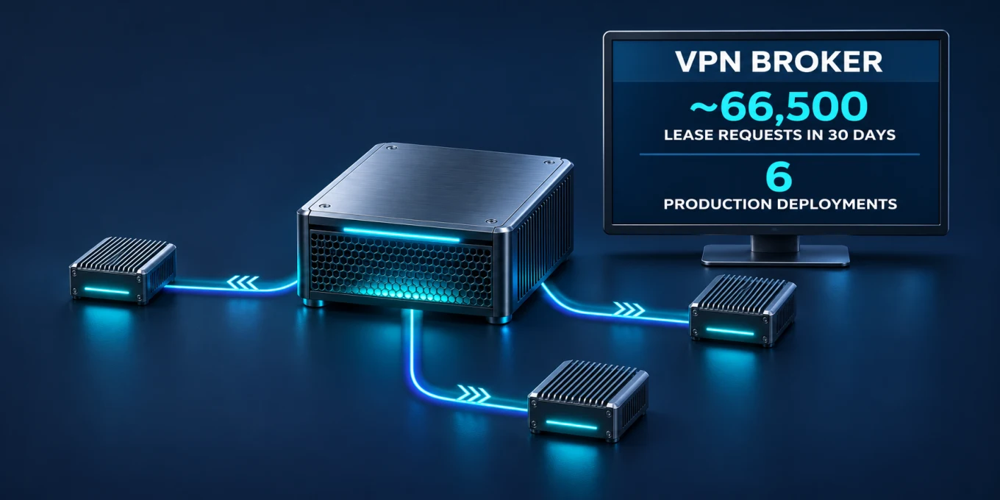

Mottu · Platform engineering
VPN Broker
I designed and built a shared API that provisions VPN profiles and credentials on demand. After a pilot in Mexico, the service reached six production Kubernetes deployments configured for VPN access in Brazil, Mexico, and the United States.
Read the case study
~66,500Lease requests in 30 days
6Production deployments